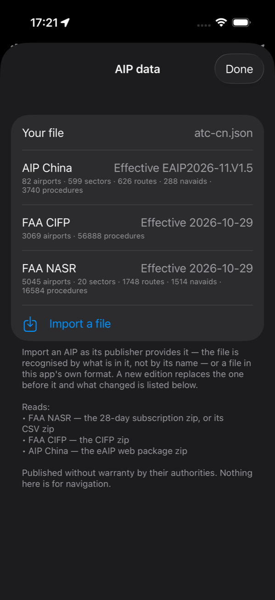
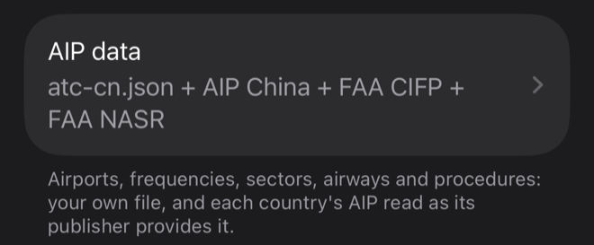
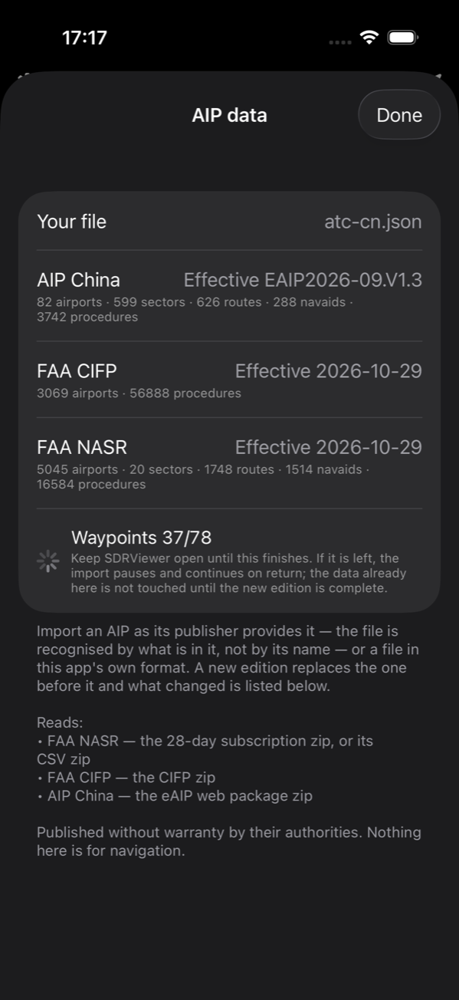

Importing an AIP directly
Besides a JSON file you prepare yourself, the app reads the archives civil aviation authorities publish, exactly as they are downloaded: nothing to unzip and nothing to convert on a computer first. This page lists the files it takes today, where to get them, and how to import one.


Not for navigation. This is a backdrop for a receiver's screen. Each publication comes from its authority without warranty and is reissued every 28 days; for any flying, use the current official material.
What it reads today
| Publication | The file to hand over | Size | What you get |
|---|---|---|---|
| FAA NASR (United States) | 28DaySubscription_Effective_date.zip, or the CSV zip inside it | about 260 MB (the CSV zip, about 22 MB) | Airports and their frequencies, navaids, airways, each centre's boundary and the frequencies of its remote sites |
| FAA CIFP (United States) | CIFP_date.zip | about 9 MB | Departures, arrivals, approaches and missed approaches, with altitude and speed limits |
| AIP China (eAIP) | EAIPedition_Web.zip | about 1.9 GB | Airports and their frequencies, control sectors (boundary, limits, frequency, callsign), FIR boundaries, routes, navaids, departures, arrivals and approaches |
| AIP Korea | AIM_AIP AMDT_number.zip ("Complete AIP in PDF") | about 1.8 GB | Airports and their frequencies, control sectors, FIR boundaries, routes, navaids, departures, arrivals and approaches |
| AIP Hong Kong, China (Macao, China included) | aipall.pdf, the whole AIP as one PDF | about 170 MB | The frequencies of Hong Kong International and Macao International, the control sectors of Hong Kong, China and FIR boundary, routes, navaids, and both airports' departures, arrivals and approaches (conventional departures included), and minimum sector altitudes (MSA) |
| AIP Taiwan, China (Taipei FIR) | Not a file but an amendment's web address | about 18 MB of pages, downloaded | 19 airports and their frequencies, terminal areas and class C/D/E airspace, the FIR boundary, routes, navaids |
Recognised by what is inside, not by its name. A renamed download is fine: the app opens the archive and tells what it is from its contents. A file it does not recognise is refused with a message, and nothing already imported is touched.
Japan is being worked on. When they arrive they will appear in the Reads list at the foot of the app's AIP data page, which always states what the installed version takes.
Where to get them
United States: FAA NASR and CIFP
The FAA's aeronautical data is public and needs no account. The two files cover different things; import either, or both.
- NASROpen the FAA's 28 Day NASR Subscription page, choose the edition marked Current, and download the whole subscription,
28DaySubscription_Effective_date.zip. To save data, the CSV section of the same page offers the CSV zip alone, which the app takes as well. - CIFPOpen the FAA's CIFP download page and download the current
CIFP_date.zip.
With NASR alone, a departure or arrival is only its fixes in order, with no altitude or speed limits, and there are no approaches. Importing CIFP as well replaces them with the fully coded procedures.
China: the eAIP
The electronic AIP of China is downloaded with your own account: register at https://www.eaipchina.cn/e-AIP, sign in, and download the complete web package (a file named like EAIP2026-11.V1.5_Web.zip).
AIP China is the copyright of the Civil Aviation Administration of China: free to consult and not to be redistributed. So the app does not carry it and this manual does not offer it. You download it with your own account, the app reads it on your device, and the data goes nowhere else.
Korea: the complete AIP in PDF
Korea's AIP is a public download and needs no account. Open the AIP publication history on Korea's AIM site and, in the edition currently in effect, choose "Complete AIP in PDF". It downloads as a zip named like AIM_AIP AMDT_12_26.zip. The HTML edition on the same page is not what the app reads; take the PDF one.
Hong Kong, China and Macao, China: AIP Hong Kong, China
The Civil Aviation Department's AIP is a public download, needs no account, and is a single PDF: https://www.ais.gov.hk/HKAIP/aipall.pdf. The link always gives the edition in effect. Macao International is in AIP Hong Kong, China as well, so both airports appear after the import.
Taiwan, China: the AIP's web pages, imported by address
The Civil Aeronautics Administration of Taiwan, China publishes its AIP on the web with no registration, but there is no whole download: only web pages, one folder per amendment. So instead of a file, the app is given that amendment's address:
- Find the amendmentOpen https://ais.caa.gov.tw/eaip/ and go into the amendment in force (or the one you want), for example AMDT 05/26, effective 29 October 2026:
https://ais.caa.gov.tw/eaip/AIRAC%20AIP%20AMDT%2005-26_2026_10_29/index.html. Copy the address from the browser; withindex.htmlor just the folder, either works. - Paste it on the AIP data pagePaste it into the box under Import a file and tap Import. The app downloads the amendment's 70 pages from the CAA's site, reads them into a database and deletes the pages.
An amendment published ahead of its effective date can be imported early. A newer amendment replaces the older one and lists what changed.
AIP Korea, AIP Hong Kong, China and AIP Taiwan, China are likewise the copyright of their publishers: free to consult and not to be redistributed. The app carries none of them, and reads only what you downloaded, on your device.
Importing in the app
- Put the archive on the iPhone or iPadAirDrop, iCloud Drive, or the Files app with a computer attached: anywhere Files can see. Leave it zipped.
- Open the AIP data pageOn the ATC or the ADS-B page, tap the gear at the top right for settings, then the AIP data row.
- Tap Import a file and choose the archiveThe import starts as soon as it is chosen.

While it imports

A spinner turns and a line says what is being done, such as Airports 12/82 (the twelfth airport of eighty-two) Waypoints 37/78 (the waypoint list of the thirty-seventh airport) or Procedures 30/78 · ZSPD (reading Pudong's procedures). Roughly how long:
| File | Time | Why |
|---|---|---|
| FAA NASR | seconds to a quarter of a minute | a dozen tables are read out of it |
| FAA CIFP | a quarter of a minute | about 400,000 records |
| AIP China | one to a few minutes | the procedures' coding tables are in more than 700 PDFs, read one at a time |
| AIP Korea | a few minutes | every airport's coding tables are read out of the PDFs |
| AIP Hong Kong, China | a few minutes to a quarter of an hour | the coding tables are pictures in the PDF, read one by one with the system's text recognition: 95 of them |
| AIP Taiwan, China | a minute or two | 70 pages are downloaded from the CAA's site, so it depends on the connection |
Keep the app open until it finishes. After switching to another app or the home screen, the system allows about half a minute more; past that the import pauses and carries on when you return. Either way the data already there is not touched until the new edition is complete: if the system ends the app, all that is lost is this import.
The archive is not unpacked onto the device: the app reads the parts it needs straight out of it. The one exception is the small CSV zip nested inside the full NASR subscription, which is taken out for the length of the import and removed when it ends.
When it has finished


- A first import lists how many of each kind were read, and anything that could not be read with the reason.
- A newer edition replaces the older one whole, and the two are then compared entry by entry: each kind shows how many were added (+), removed (−) and changed (~), and opens to show which. Two identical editions are reported as such.
- The downloaded file: once read, it is no longer needed. A file in the app's own folder is deleted by the app as soon as the database is built, so it takes no space; for one anywhere else, a Delete … button under the result removes it, since the app does not delete a file of yours without being asked.
- Dropping a publication: tap the red bin at the right of its row and confirm.
Where the data is used
- ATC: the frequencies of the airport you are at, and of the control sectors over you.
- ADS-B: airways, navaids, airports, control sectors and procedures on the map and the radar.
A country's data is large, so the app does not read it all at once: it reads the part being looked at. Move the map and that region is read. Far out, only control boundaries and airways are drawn; airports and procedures appear as you come in.
One source per region. Each publication and each JSON file becomes a database of its own, kept by region: China; Hong Kong, China and Macao, China; Taiwan, China; Korea; and the United States are separate, can all be held at once, and are removed one at a time. When a file covers a region that is already held, the app asks before replacing it, and the old data is replaced only once the new is complete.
Other countries: a JSON file
The app cannot yet read the AIP of a country outside the table above. That does not stop you using its data: the app defines an open JSON file format, and any country's data put into that shape imports and is drawn on the ATC and ADS-B pages just as a directly imported publication is.
- Part of it is enough. Any of the file's five lists (airports and frequencies, navaids, routes, procedures, sectors) may be empty. A few airports' frequencies are enough for the ATC page, a dozen lines an airport.
- Where the data comes from: most countries' AIPs can be consulted free on their authority's website. An airport's frequencies are in its AD 2.18, routes in ENR 3, navaids in ENR 4. Whether it may be passed on differs by country; using it yourself is usually fine, and the country's terms are worth reading before you share a file.
- How: the airspace data file page goes through the format section by section and offers a Los Angeles example to download and alter. Coordinates may be written in decimal degrees or as a chart prints them, in degrees, minutes and seconds.
- Mistakes are reported: on import the app names each thing it could not read. One wrong entry costs that entry, not the file.
A JSON file and imported publications can be used together as long as they cover different regions: import AIP China, AIP Hong Kong, China and AIP Korea directly, say, and add Japan from a JSON file of your own.
What each publication does not give
| Publication | Missing | Why |
|---|---|---|
| FAA NASR / CIFP | Sector boundaries below a centre | The United States does not publish them. A centre's frequencies are given by remote site, and the ATC page lists the sites within 150 km of you. |
| FAA NASR | The shapes of Class B, C and D airspace (from the CSV zip alone) | They are in another file of the full subscription, which the CSV zip does not include. Import the full one to have them. |
| FAA NASR | Private strips and heliports | Only airports with an ICAO code or open to the public are taken, about 5,000. |
| AIP China | Hong Kong, China; Macao, China; Taiwan, China | Each has an AIP of its own, not part of this publication. Hong Kong and Macao come from AIP Hong Kong, China above; Taiwan from the address of AIP Taiwan, China. |
| AIP China | Minimum sector altitudes (MSA) | The MSA is printed only on the charts. China's come in two layouts, centred on the airport and two navaids joined; the reading is not finished, so none are drawn yet. |
| AIP China | Conventional (non-RNAV) departures, arrivals and approaches | The app reads the procedures' database coding tables; a conventional procedure is defined by bearings and distances from navaids and has none. |
| AIP Hong Kong, China | The own control frequencies of Macao, China | It lists only Hong Kong ATC's frequencies for Macao traffic; Macao's tower, approach and the rest are in AIP Macao, China. |
| AIP Hong Kong, China | The exact northern side of the FIR and the TMA | It is published as "along the limit of the territorial waters", with no coordinates. Import AIP China first and AIP Hong Kong, China after, and that side is drawn along China's control sectors (an approximation); otherwise that side of the FIR is not drawn and the TMA is closed with a straight line. |
| AIP Hong Kong, China | The odd fix in a coding table | The tables are pictures in the PDF. Where a fix name cannot be read, the import says so, leg by leg, and that leg is left out of the drawing. |
| AIP Taiwan, China | Departures, arrivals and approaches | They are in each airport's chart PDFs, not read yet. |
| AIP Taiwan, China | The FIR's north side (29°N) and west side (117°30′E) | They lie across the Shanghai and Guangzhou FIRs as AIP China publishes them and are not drawn; along the strait the boundary is AIP China's. |